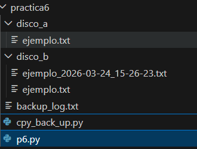
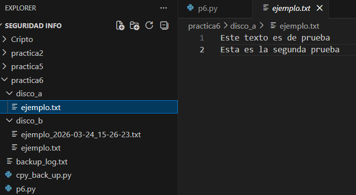
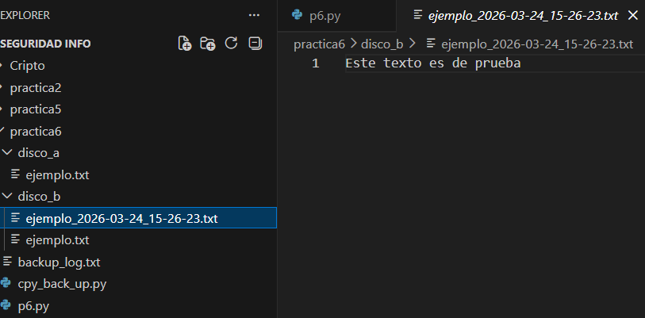
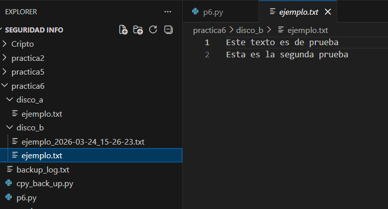
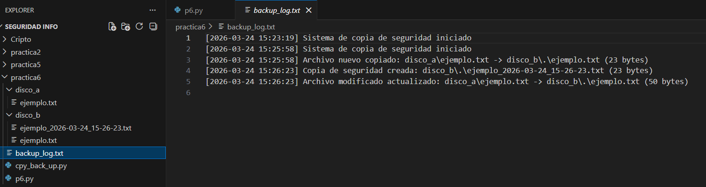

Backup Automatizado
Introducción
En esta práctica se ha desarrollado un script en Python que realiza copias de seguridad automáticas entre dos carpetas.
El sistema detecta archivos nuevos y modificados, crea copias con fecha antes de sobrescribirlos y guarda un log con toda la actividad.
1. Diseño teórico de una estrategia de BackUp - Toma de decisiones y precios
Estrategia A: Empresa de Desarrollo y Hosting (30 trabajadores)
Escenario: Empresa con alta carga de datos y responsabilidad sobre webs de clientes.
A. Sistema Seleccionado: Modelo Híbrido Profesional
- Infraestructura: Se instala un servidor NAS (como un Synology o QNAP) con 4 bahías en RAID 5. Esto permite que si un disco se rompe, la oficina siga trabajando sin perder datos.
- Copia en la Nube: El NAS se sincroniza cada noche con AWS S3 Glacier. Usamos "políticas de inmutabilidad", lo que significa que si un virus entra en la oficina, no puede borrar las copias de la nube.
- Precio Medio: Inversión inicial de 1.400€ (NAS + Discos Enterprise) y una cuota mensual de unos 90€ por el almacenamiento en la nube.
B. Alternativa más barata:
- Solución: Usar un servidor local con Linux y software libre (como Bacula o Rsync) realizando copias a Backblaze B2.
- Justificación: Ahorramos en licencias y en hardware de marca, pagando solo unos 5€ al mes por cada TB de datos. Es seguro porque los datos van cifrados antes de salir de la empresa.
Estrategia B: Desarrollador Autónomo (1 trabajador)
Escenario: Desarrollador independiente que necesita seguridad sin complicaciones técnicas ni costes altos.
A. Sistema Seleccionado: Sincronización + Backup Físico
- Infraestructura: Uso de Microsoft 365 (OneDrive) o Google Workspace. Estos servicios guardan versiones anteriores de cada archivo automáticamente (si te equivocas, puedes "volver atrás" en el tiempo).
- Copia de Seguridad Extra: Un disco duro externo SSD de 2TB que se conecta una vez a la semana para clonar todo el sistema de forma manual o con software sencillo.
- Precio Medio: Suscripción de 10€/mes y una compra única de 120€ por el disco SSD.
B. Alternativa más barata:
- Solución: Utilizar los 15GB gratuitos de Google Drive para los proyectos activos y un disco duro HDD tradicional (más lento pero más barato) para el resto.
- Justificación: El coste mensual es 0€. La seguridad se mantiene porque los archivos vitales están en la nube y el resto en un soporte físico fuera de la red.
2. Desarrollo del script de Backup y Logs mejorados
Captura 1
Vista general de la carpeta del proyecto con el script, las carpetas de origen y archivos de prueba.

Captura 2
Archivo ejemplo.txt dentro de la carpeta de origen (disco_a).

Captura 3
Copia del archivo con fecha y hora generada automáticamente tras una modificación.

Captura 4
Archivo ejemplo.txt actualizado en la carpeta de destino (disco_b).

Captura 5
Archivo backup_log.txt donde se registran todas las acciones realizadas por el script.

Valoración
Dificultad media, algo más sencilla que la práctica 5. Es útil para entender cómo funcionan los backups y el control de cambios en archivos.
Aun así, este sistema no sería el más adecuado en un entorno real, ya que no incluye copias externas, cifrado ni gestión avanzada de versiones. En empresas se utilizan soluciones más completas (nube, redundancia, etc.).